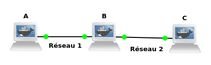

TP n°2
HomeConfiguration du réseau

La première étape du TP consiste à réaliser votre réseau et à contrôler son bon fonctionnement. On considère la configuration 1 (Figure 1). L’objectif de cette section consiste à :
- choisir les adresses IP de chaque interface
- configurer ces adresses correctement
- câbler et tester le réseau
Choix des adresses IP des machines
Dans la mesure où vos machines ne sont pas connectées à Internet (voir remarque 2), vous pouvez utiliser un adressage de votre choix (adressage privé). Il vous faut donc choisir :
- La longueur p du préfixe (donc le netmask)
- L’adresse réseau (commune à toutes les machines du réseau), c’est-à-dire les p bits du préfixe
- Les adresses machine (une par interface connectée).
Pour ce dernier point, remarquez que la station B est un routeur et possède deux adresses sur deux réseaux différents. La figure 1 indique donc deux sous-réseaux, c’est pourquoi on utilisera la méthode suivante :
- fixer l’adresse réseau, i.e. le préfixe commun aux 2 sous-réseaux
- fixez les q bits identifiant chaque sous-réseau, puis fixez pour chaque interface les 32 − p − q bits de la partie machine 4.
Question 1 parmi les 32 − p bits de la partie machine, quel est le nombre minimum q qu’il faut dédier à la séparation des sous-réseaux 5 ?
Question 2 Résumez les différentes adresses choisies ainsi que leur masque de sous-réseau (netmask) sur le schéma de la figure 1. Donnez aussi les adresses réseau correspondant à chaque réseau.
> Si nous vous laissons choisir librement l’adresse des machines, c’est uniquement parce que celles-ci ne seront pas raccordées au réseau international. Normalement, il faut formuler une demande auprès d’un organisme national ou international coordonné par l’IANA (qui assure l’unicité des adresses IP dans le monde entier).
Raccordement du matériel:
Question 3 Sur GNS créé 2 machines ayant chacune 2 interface et reliée-les afin de réaliser le réseau 1 de la configuration 1.
Les PCs A et B forment alors un unique réseau de niveau 2 (au sens des couches OSI).
Configuration des machines
Votre réseau 1 est prêt ; il faut maintenant configurer les machines au niveau logiciel, afin qu’elles se reconnaissent et qu’elles puissent dialoguer. Vous pouvez rendre votre réseau opérationnel de deux façons :
- Soit en modifiant des fichiers de configurations précis et en « rebootant » les machines pour que celles-ci prennent en compte vos modifications ;
- Soit en lançant manuellement les commandes qui permettent de configurer tout de suite vos machines.
Il est bien évident que dans une situation réelle, on ne configure pas une machine manuellement ! Mais
cette manipulation est nécessaire pour comprendre ce que font les machines de façon automatique quand
elles démarrent.
Utilisez ifconfig (voir section 1.3) pour observer et configurer vos interfaces.
Question 4 À l'aide de la commande ifconfig, configurez l’interface des machines A et B en fonction de vos réponses à la question 2.
Comment s’appellent vos interfaces principales ? Quelles sont leurs adresses MAC ?
Question 5 Pourquoi doit-on préciser le masque en plus de l’adresse IP ? Combien vaut-il ?
Question 6 Dans la réponse ci-dessus à la commande ifconfig em0 (em0 étant le nom de l’interface,
il peut varier suivant votre configuration), le nombre "Bcast" de 4 octets situé sur la deuxième ligne (en
plus de l’adresse IP et du netmask) correspond à une adresse spéciale correspondant au broadcast (envoi
d’un message à tous les hôtes d’un réseau). Comment est-il déterminé ?
ARP et ICMP
Utilisation de ping Il convient maintenant de vérifier que les machines sont bien connectées et bien
configurées. Il existe un outil standard pour cela : ping. Par défaut ping permet de vérifier qu’une machine
distante répond bien quand on l’appelle.
Question 7 Sur une machine (A ou B), lancez la commande suivante :
ping <adresse_internet_de_machine_distante>
Si dans l’instant qui suit ping ne vous répond pas que la machine distante est en marche, c’est qu’il y a un problème. Si vous n’avez pas de réponse, vérifiez votre installation et relancez ping. Ping vous donne aussi le temps d’aller-retour vers la machine destinataire.
Observation de l’activité du réseau
Après avoir configuré les machines et vérifié au niveau utilisateur que le "réseau" fonctionne correctement, vous allez maintenant « écouter » le câble Ethernet et regarder ce qui se passe quand vous lancez des commandes comme ping.
Dans la suite des manipulations, utilisez Wireshark en capturant les paquets sur l’interface connectée
au réseau que vous voulez observer. Pour faciliter cette observation, n’oubliez pas de cocher la case
"Update list of paquets in real time".
Observation de la commande ping
Sur les deux machines A et B, lancez Wireshark. Démarrez une capture sur l’une des interfaces en jeu.
Question 8 Sur l’une des deux machines, exécutez un ping pour savoir si l’autre est en marche :
ping <adresse d’une machine distante>. Sachant que ping utilise des paquets de type ICMP, analysez et
commentez le fonctionnement de ping. Donnez en particulier les types et codes des en-têtes ICMP des
paquets échangés.
En plus des paquets concernant directement ping (ICMP), Wireshark devrait normalement capturer
d’autres paquets de type ARP (Address Resolution Protocol). Si ce n’est pas le cas, laissez reposer la
machine d’où vous aviez lancé ping pendant un moment (quelques minutes), et relancez ping (pour gagner
du temps vous pouvez aussi taper arp -ad).
Question 9 Laissez reposer la machine source du ping pendant un moment et relancez plusieurs fois ping comme précédemment. Observer l’analyse de Wireshark et faites un diagramme temporel représentant les information pertinentes des paquets observés.
Question 10 Les paquets concernant le protocole ARP n’apparaissent qu’au début : pourquoi ?
Question 11 Pourquoi utilise-t-on des diffusions (broadcasts, ce sont des paquets qui devront être captés par toutes les stations connectées au réseau) au niveau 2 ? Quelle est l’adresse destinataire dans les messages broadcast ?
Question 12 Résumez le protocole ARP : Quel est le contenu des différents paquets circulant sur le réseau ? Quels sont les différents champs de l’en-tête ARP et leur valeur ?
Étude du routage
Connectez les stations B et C (réseau 2) afin de parvenir à la configuration de la figure 1. Configurez leurs interfaces avec les adresses choisies à la question 2. Note : sur B, il faudra utiliser la deuxième interface réseau puisque la première est déjà utilisée pour le réseau 1.
Manipulation de la table de routage
Cette topologie faisant apparaı̂tre deux réseaux distincts, les adresses réseaux de A et C doivent être différentes. Au besoin, utilisez Wireshark pour vous aider à comprendre ce qui se passe.
Question 13 Avec ping, déterminez les stations qui ne peuvent pas communiquer entre elles ; expliquez brièvement pourquoi.
Dans la table de routage de la station A, introduisez une entrée permettant d’atteindre le réseau 2 (voir la manipulation des tables de routage). Sur la station C, lancez l’utilitaire pong dont le rôle est de vous prévenir quand la station reçoit une requête de ping (un message de la forme "echo request from..." apparaı̂t à l’écran).
Recommencez le ping de A vers C. Vous devriez constater que ping sur A bloque (mais n’affiche plus de message d’erreur), et que pong sur C ne réagit pas. Ceci est du au fait que la station B ne fait pas suivre la requête ICMP du réseau 1 vers le réseau 2. Sur cette station, lancez la commande suivante :
sysctl -w net.inet.ip.forwarding=1
Le but de cette commande est de modifier le comportement de la station B, de façon à ce qu'elle permette le passage des paquets entre les deux réseaux lorsque cela est nécessaire (i.e., B devient routeur).
Question 14 Recommencez ping de A vers C. Que constatez-vous sur les stations A et C ? Expliquez pourquoi, et remédiez à ce problème (faites en sorte que le ping de A vers C fonctionne).
Question 15 Recommencez le ping de A vers C après avoir nettoyé les tables ARP (arp -ad)
sur les 3 machines. Combien de requêtes ARP observez-vous ? Pour quelle(s) adresse(s) IP ? Faites un schéma.
Expliquez.
Communication avec le reste du monde
Question 16 A votre avis quel doit être le contenu de la table de routage d’une station grâce à laquelle on veut pouvoir communiquer avec le « reste du monde » ?
Il est possible d’ajouter dans une table de routage une adresse d’un routeur par défaut. C’est à dire que l’on donne l’adresse d’un routeur pour toutes les adresses réseaux que l’on ne connait pas explicitement.
On utilise alors la commande
route add default adresse_routeur
Question 17 Cette adresse par défaut est en fait 0.0.0.0/0. Pourquoi ?
On peut la visualiser après l’avoir ajoutée par netstat -rn. Utilisez la dernière station à votre disposition
afin qu’elle apparaisse comme une station extérieure comme indiqué en figure 2. Il faut donc choisir un
nouveau préfixe pour le réseau 3 (réseau d’accès).

Question 18 Donnez l’adresse et le masque de ce nouveau réseau. Faites communiquer les stations entre elles (configuration d’interfaces et de tables de routage). On utilisera le moins d’entrées possibles dans les tables de routage, et le plus souvent possible la route par défaut.
Question 19 Donnez les tables de routage pour chaque station. Justifiez. Quel est l’intérêt de ces routes par défaut ?
Observation du routage automatique (bonus)
Le but de cette manipulation est de découvrir le routage automatique par l’intermédiaire des démons (remplissage automatique des tables…). Le rôle des démons de routage sur les différentes stations est de se communiquer les routes permettant d’atteindre tous les réseaux locaux. Le démon s’appelle routed et peut être lancé avec deux options :
-s(supply) pour informer les autres stations des réseaux qu’elles peuvent atteindre en transitant par la station sur laquelle il est lancé.-q(quiet) pour prendre en compte les chemins qui lui sont communiqués sans informer les stations des chemins qu’il connaı̂t.
En résumé, sur les routeurs, on lance généralement routed avec l’option -s, et sur les hôtes avec l’option -q 6 .
Pour communiquer, les démons utilisent un protocole au-dessus de UDP ; ce protocole s’appelle RIP (Routing Information Protocol). Gardez la dernière topologie réalisée dans la manipulation précédente, puis :
- nettoyez les tables de routages sur les stations A,B,C et D ;
- assurez-vous que toutes les routes ont été enlevées (routes par défaut également)
- lancez le démon routed -q sur les stations A et C ;
- lancez le démon routed -s sur la station B.
> Note : dans la manipulation précédente, la station B a été paramétrée de façon à faire passer les paquets
d’un réseau à un autre (ip.forwarding). Il est donc inutile de la reparamétrer ici ; mais notez bien que ce
paramétrage est indispensable, et que ce n’est pas le démon qui le réalise.
Question 20 Demandez par netstat -r le contenu des tables de routage des quatre stations. Que concluez-
vous ? Vérifiez par un ping que les stations A et C peuvent communiquer.
Pour la suite nous allons revenir à la configuration initiale :
Lancez une capture sur chaque lien. Ne touchez pas aux stations A, B et C tant que vous n’avez pas interceptés environ quatre paquets par interface sur la station D. L’opération ne devrait pas durer plus de 2 minutes. Arretez les captures et sauvegardez les dans des fichiers (au format pcap ou pcang). À partir de l'un des Wireshark, fusionnez les fichiers (File > Merge). Attention à bien effectuer une fusion chronologique (c'est lorsque l'on choisi le fichier que l'on peut choisir).
Question 21 Analysez les paquets capturés. Comment les routeurs se comportent-ils vis-à-vis des hosts ? Détaillez les informations communiquées avec le protocole RIP.
Question 22 Quel est l’intervalle de temps qui sépare l’émission automatique de deux paquets RIP consécutifs sur un même réseau ?
Sur la station A, lancez l’utilitaire check-route (il affiche à intervalles de 10 secondes le contenu de la table de routage ; c’est un script basé sur netstat), puis débranchez la station A du réseau 1 (afin de simuler une rupture du réseau).
Question 23 Au bout de combien de temps note-t-on un changement dans la table de A ?